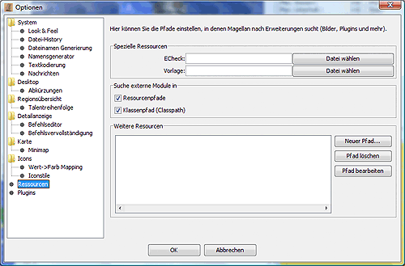

In diesem Dialog kann man externe Dateien in Magellan einbinden. Dazu zählen z.B. alternative Grafiksets, externe Plugins, Anpassungen für andere Spiele (z.B. Verdanon) usw.

Hier können die Pfade/Verzeichnisse eingestellt werden, in dem die Zusatzprogramme Vorlage, zum Erstellen von Zugvorlagen, und ECheck, dem Syntaxchecker für Eressea, liegen.
Ein Klick auf die Schaltfläche öffnet einen Dateiauswahldialog, in dem man die ausführbaren Dateien der jeweiligen Programme auswählt.
Der Dialog ermöglicht das Neuanlegen, Bearbeiten und Löschen von Ressourcepfaden. Für die meisten Ressourcen genügt es, das entsprechende .jar oder .zip-File in der Dateisauswahlbox auszuwählen. Genaueres erfährt man in der Dokumentation der jeweiligen Erweiterung und im Kapitel Ressourcen.